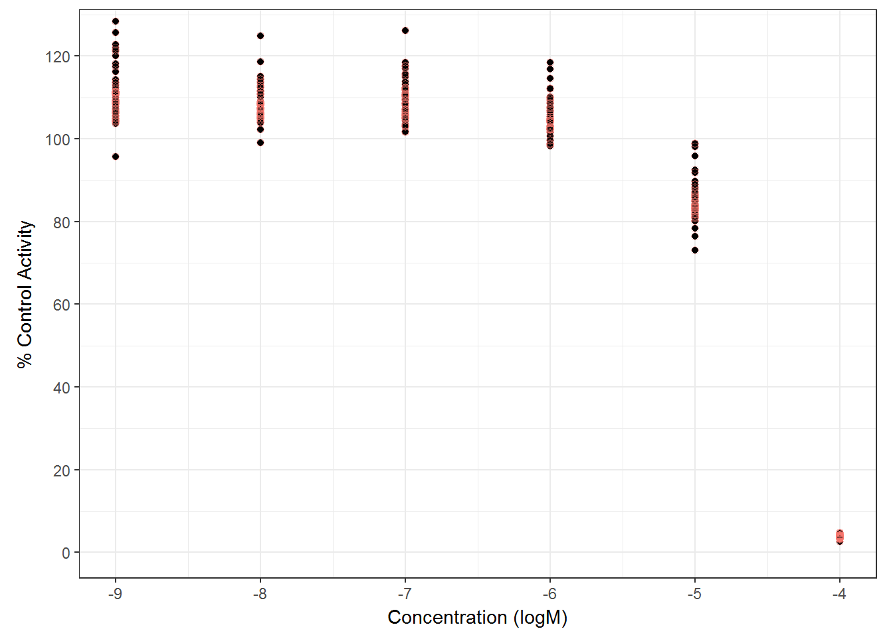
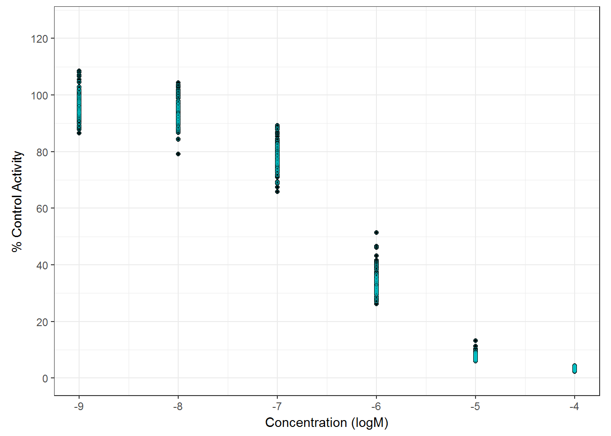
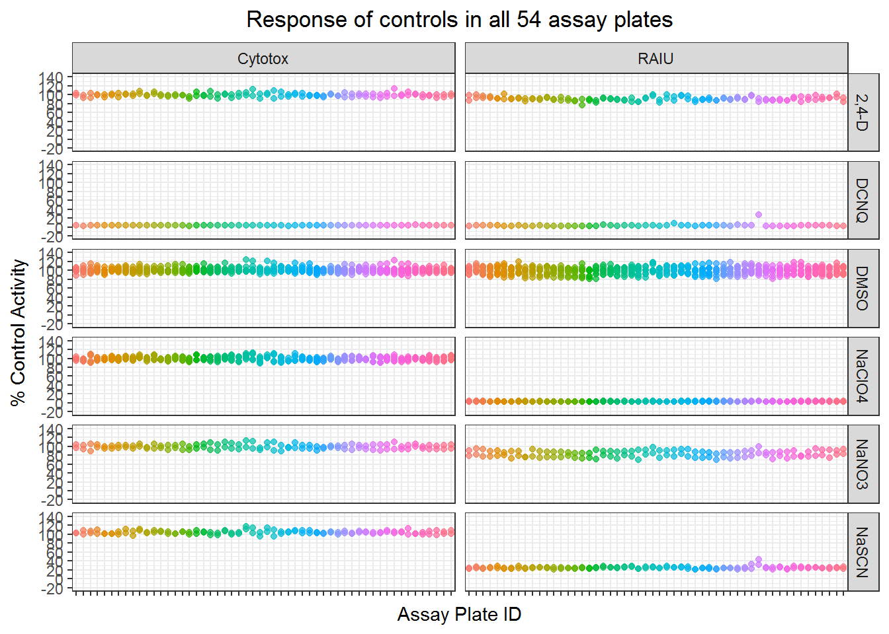

4 Multi-Conc Analysis
4.1 Import MC data
# import unblinded chemical name, aliquoted_concentration, cas number and rename the col names to keep only chnm, casn, spid, conc.
spid_chnm_table <- read_excel("./raw data files/EPA_11700_EPA-SLaws_ph1v2_150ul_20170125_key.xlsx")
spid_chnm_table <- spid_chnm_table %>% dplyr::select(EPA_Sample_ID, CASRN, Preferred_Name)
# rename the column title to be compatible with tcpl package.
names(spid_chnm_table) <- c("spid", "casn", "chnm")
# Import MC data (look at the 169 chemicals)
mc_lvl0_raiu_update <-
read_csv("./input data files/NIS_ph1_v2_mc_lvl0_for_tcpl_raiu.csv") %>%
filter(!(spid %in% ls11$spid))
mc_lvl0_cyto_update <-
read_csv("./input data files/NIS_ph1_v2_mc_lvl0_for_tcpl_cytotox.csv") %>%
filter(!(spid %in% ls11$spid))
dt_mc <- bind_rows(mc_lvl0_cyto_update, mc_lvl0_raiu_update)4.2 Normalization
Normalize raw response to the median of DMSO controls, calculated per plate.
dt_mc_norm <- toxplot::normalize_per_plate(dt_mc)4.3 3bMAD of MC
#create concentration index
dt_mc_norm <- dt_mc_norm %>%
group_by(spid) %>%
mutate(cndx = generate_index(conc)) %>%
ungroup
##
sig_mc <- dt_mc_norm %>%
mutate(neg_nval_median= 100 - nval_median) %>%
group_by(assay) %>%
filter(wllt == "t") %>%
filter(cndx == 1 | cndx == 2) %>%
summarise(bMAD = mad(neg_nval_median, na.rm = TRUE),
three_bMAD=3*mad(neg_nval_median, na.rm = TRUE))
knitr::kable(sig_mc, digits =2)| assay | bMAD | three_bMAD |
|---|---|---|
| Cytotox | 5.89 | 17.68 |
| RAIU | 7.93 | 23.78 |
4.4 Multi-Con QC
#~~~~~~~~~~model mc controls~~~~~~~~~~~~~~~~~
##extract mc related data frame
d_pos_cyto <- dt_mc_norm %>% filter(assay == "Cytotox", wllt== "pc")
d_pos_raiu <- dt_mc_norm %>% filter(assay == "RAIU", wllt=="pr")
d_neg_cyto <- dt_mc_norm %>% filter(assay == "Cytotox", wllt=="nrc")
d_neg_raiu <- dt_mc_norm %>% filter(assay == "RAIU", wllt=="nrc")
d_ec80_raiu <- dt_mc_norm %>% filter(assay == "RAIU", wllt=="pr_ec80")
d_ec20_raiu <- dt_mc_norm %>% filter(assay == "RAIU", wllt=="pr_ec20")
##plot all DCNQ in multi-con
g_cyto_pos <- qplot(data=d_pos_cyto, x=log10(conc), y=nval_median) +
labs(
#title = paste("SPID: " , spid, "\nNAME: ", chnm, "\nCAS NO: ", casn, sep = ""),
x = "Concentration (logM)",
y = "% Control Activity"
) +
geom_point(
color = "#F8766D",
shape = 1,
alpha = 0.5,
size = 1.8
) +
coord_fixed(
ylim = c(0, 125),
xlim = c(-9, -4),
ratio = 2 / 70
) +
scale_y_continuous(breaks = seq(
from = 0,
to = 120,
by = 20
)) +
theme_bw() +
# scale_color_manual(values=c("red","blue"))+
theme(legend.title = element_blank())+
theme(plot.title=element_text(hjust=0.5))
g_cyto_pos
# png('./output plots for SOT poster/DCNQ.png', units="px", width=512*12.5, height=306*12.5, res=900)
# g_cyto_pos
# dev.off()
##plot all NaClO4 in multi-con
g_raiu_pos <- qplot(data=d_pos_raiu, x=log10(conc), y=nval_median) +
labs(
#title = paste("SPID: " , spid, "\nNAME: ", chnm, "\nCAS NO: ", casn, sep = ""),
x = "Concentration (logM)",
y = "% Control Activity"
) +
geom_point(
#position="jitter",
color = "#00BFC4",
shape = 1,
alpha = 0.5,
size = 1
) +
#geom_smooth(color = "#00BFC4")+
coord_fixed(
ylim = c(0, 125),
xlim = c(-9, -4),
ratio = 2 / 70
) +
scale_y_continuous(breaks = seq(
from = 0,
to = 120,
by = 20
)) +
theme_bw() +
# scale_color_manual(values=c("red","blue"))+
theme(legend.title = element_blank())+
theme(plot.title=element_text(hjust=0.5))
print(g_raiu_pos)
# Obtain AC50 adn absEC50 for the positive controls
d_pos_raiu <- mutate(d_pos_raiu, spid = paste(spid, apid, sep = "_"))
pos_raiu_md <- toxplot::fit_curve_tcpl(df = d_pos_raiu,
assay_info = list(prim_assay = "RAIU", toxi_assay = NULL))## Processing 54 samples(spid)....
## Curve Fitting Completed!
## Calculation time: 6.9 secsraiu_pos_tbl <- toxplot::summary_tcpl(pos_raiu_md)
d_pos_cyto <- mutate(d_pos_cyto, spid = paste(spid, apid, sep = "_"))
pos_cyto_md <- toxplot::fit_curve_tcpl(df = d_pos_cyto,
assay_info = list(prim_assay = NULL, toxi_assay = "Cytotox"))## Processing 54 samples(spid)....
## Curve Fitting Completed!
## Calculation time: 3.6 secscyto_pos_tbl <- toxplot::summary_tcpl(pos_cyto_md)
pos_tbl <- bind_rows(cyto_pos_tbl, raiu_pos_tbl) #this is the modelling results for all mc positive summarizing EC50s of positive controls in multi-con assay.
##summarizing EC50s of positive controls.
library(psych)
pos_sum_raiu <- raiu_pos_tbl %>%
dplyr::select(AC50_prim, absEC50_prim) %>%
describe
pos_sum_cyto <- cyto_pos_tbl %>%
dplyr::select(AC50_toxi, absEC50_toxi) %>%
describe
knitr::kable(pos_sum_raiu, digits = 2, caption="Summary of RAIU positive control IC50s")| vars | n | mean | sd | median | trimmed | mad | min | max | range | skew | kurtosis | se | |
|---|---|---|---|---|---|---|---|---|---|---|---|---|---|
| AC50_prim | 1 | 54 | -6.38 | 0.13 | -6.41 | -6.40 | 0.11 | -6.57 | -6.04 | 0.53 | 1.04 | 0.83 | 0.02 |
| absEC50_prim | 2 | 54 | -6.36 | 0.13 | -6.39 | -6.38 | 0.10 | -6.54 | -6.04 | 0.51 | 0.89 | 0.52 | 0.02 |
knitr::kable(pos_sum_cyto, digits = 2, caption="Summary of Cytotox positive control IC50s")| vars | n | mean | sd | median | trimmed | mad | min | max | range | skew | kurtosis | se | |
|---|---|---|---|---|---|---|---|---|---|---|---|---|---|
| AC50_toxi | 1 | 54 | -4.83 | 0.12 | -4.88 | -4.86 | 0.03 | -4.92 | -4.47 | 0.45 | 1.98 | 2.87 | 0.02 |
| absEC50_toxi | 2 | 54 | -4.83 | 0.10 | -4.88 | -4.85 | 0.03 | -4.92 | -4.55 | 0.37 | 1.75 | 1.74 | 0.01 |
4.5 Multi-Con Controls
Visualize all controls in MC, NaClO4 and DCNQ are plotted using the 1E-4M concentration wells.
m3 <- dt_mc_norm %>%
filter(!wllt %in% c("t")) %>%
filter(!(spid %in% c("NaClO4", "DCNQ")))
m4 <- dt_mc_norm %>%
filter(spid %in% c("NaClO4", "DCNQ")) %>%
filter(conc == 1e-4)
m31 <- bind_rows(m3, m4)
## facet plots of all controls' data points
ggplot(m31, aes(apid, nval_median)) +
geom_point(aes(color=apid),alpha=0.7) +
facet_grid(spid~assay) +
scale_y_continuous(limits= c(-20,140), breaks= seq(from=-20, to=140, by=20)) +
#scale_x_discrete(breaks=NULL)+
scale_x_discrete(labels=NULL)+
ylab("% Control Activity") +
xlab("Assay Plate ID")+
ggtitle("Response of controls in all 54 assay plates")+
theme_bw()+
theme(legend.position = "none",
plot.title=element_text(hjust=0.5))
##print the control stats table.
mc_ctrl_sum <- m31 %>%
filter(wllt != "t") %>%
#mutate(assay= if_else(aeid==1, "Cytotox", "RAIU")) %>% #add "assay" variable
mutate(resp=nval_median) %>%
group_by(assay, spid) %>%
summarize(mean = mean(resp),
sd = sd(resp),
min = min(resp),
max = max(resp),
CV = sd/mean*100)
knitr::kable(mc_ctrl_sum, digits = 2, caption = "Multi-Conc Control Summary Stats")| assay | spid | mean | sd | min | max | CV |
|---|---|---|---|---|---|---|
| Cytotox | 2,4-D | 99.34 | 4.21 | 90.92 | 113.31 | 4.24 |
| Cytotox | DCNQ | 3.72 | 0.38 | 2.62 | 4.76 | 10.33 |
| Cytotox | DMSO | 100.92 | 5.41 | 87.82 | 123.66 | 5.36 |
| Cytotox | NaClO4 | 99.19 | 4.69 | 89.12 | 112.51 | 4.73 |
| Cytotox | NaNO3 | 98.95 | 5.43 | 88.64 | 112.92 | 5.49 |
| Cytotox | NaSCN | 104.30 | 3.98 | 94.83 | 117.03 | 3.81 |
| RAIU | 2,4-D | 90.86 | 4.49 | 76.22 | 101.30 | 4.94 |
| RAIU | DCNQ | 3.92 | 3.37 | 2.58 | 27.36 | 85.98 |
| RAIU | DMSO | 99.50 | 8.28 | 80.77 | 119.46 | 8.32 |
| RAIU | NaClO4 | 3.28 | 0.38 | 2.30 | 4.33 | 11.47 |
| RAIU | NaNO3 | 83.08 | 7.17 | 69.45 | 98.80 | 8.63 |
| RAIU | NaSCN | 24.69 | 2.71 | 20.47 | 43.17 | 10.99 |
4.6 Dose-response modeling
The model used here is the Hill model provided in tcpl R package.
\[f(x) = \frac{tp}{1+10^{(ga-x)gw}}\]
Where x is the log concentration, tp is the top asymptote, ga is the AC50 (the log concentration where the modeled activity equals 50% of the top asymptote), and gw is the hill coefficient. The Hill model provided in the tcpl R package constrains the three parameters as following:
- 0 ≤ tp ≤ 1.2 times the maximum response value
- 0 ≤ tp ≤ 1.2 times the maximum response value
- (minimum log concentration minus 2) ≤ ga ≤ (maximum log concentration plus 0.5)
- (minimum log concentration minus 2) ≤ ga ≤ (maximum log concentration plus 0.5)
- 0.3 ≤ gw ≤ 8
The modelling is done using a wrapper function fit_curve_tcpl in ToxPlot package, which serve as an convenient interface to use the tcplFit function in the tcpl package, and returns a list object containing all data and modeling results.
mc_model <- fit_curve_tcpl(df = filter(dt_mc_norm, wllt == "t"),
assay_info = list(prim_assay = "RAIU", toxi_assay = "Cytotox"),
prim_cutoff = 23.8, toxi_cutoff = 17.7)## Processing 169 samples(spid)....
## Curve Fitting Completed!
## Calculation time: 25.5 secs